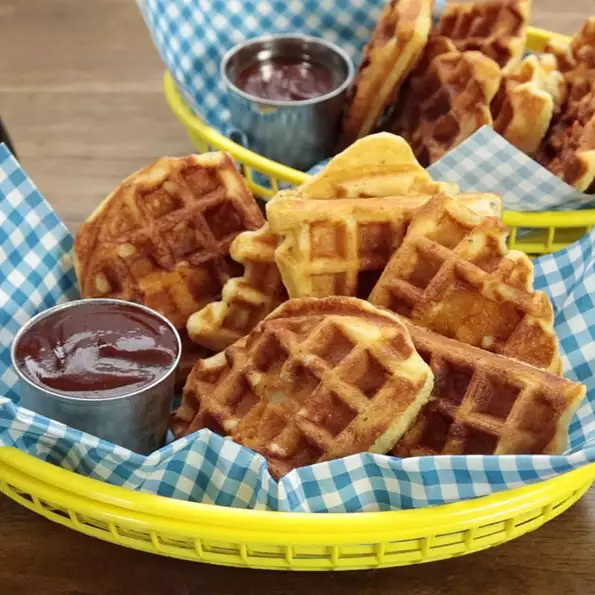

Chicken in a Waffle

Description
Baked chicken nuggets are coated in savory waffle batter and cooked until
crisp and golden in a waffle iron. Dip in barbeque sauce or maple syrup
and gobble them up!
- Prep: 15 mins
- Cook: 25 mins
- Total: 40 mins
- Servings: 6
- Yield: 6 servings
Ingredients
- 24 frozen chicken nuggets
- cooking spray
- 1 ¼ cups all-purpose flour
- ¼ cup cornmeal
- 1 ½ teaspoons white sugar
- 1 ½ teaspoons baking powder
- 1 teaspoon salt
- ¾ teaspoon baking soda
- ½ teaspoon ground black pepper
- ¼ teaspoon cayenne pepper
- 1 ¾ cups buttermilk
- ⅓ cup vegetable oil
- 2 eggs, beaten
Steps
-
Preheat oven to 400 degrees F (200 degrees C). Spread chicken nuggets
out on a baking sheet.
-
Bake nuggets in the preheated oven until hot and crispy, 11 to 13
minutes.
-
Preheat a waffle iron according to manufacturer's instructions and
lightly coat with cooking spray.
-
Whisk flour, cornmeal, sugar, baking powder, salt, baking soda, black
pepper, and cayenne pepper together in a bowl. Whisk buttermilk, oil,
and eggs together in another bowl. Pour buttermilk mixture into flour
mixture and stir until batter is just-combined.
-
Place 1 chicken nugget in the center of each waffle section on the
waffle iron. Cover each nugget with about 1 tablespoon of batter, close
the waffle iron, and cook until golden and crisp, about 4 minutes.
Repeat with remaining nuggets and batter.